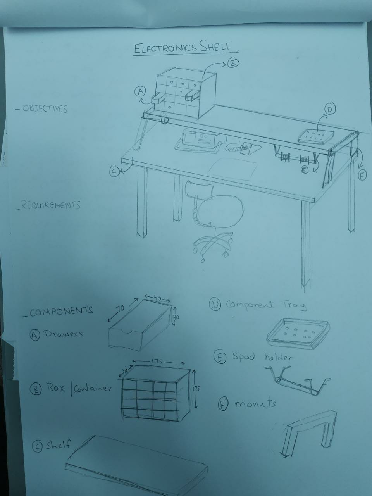
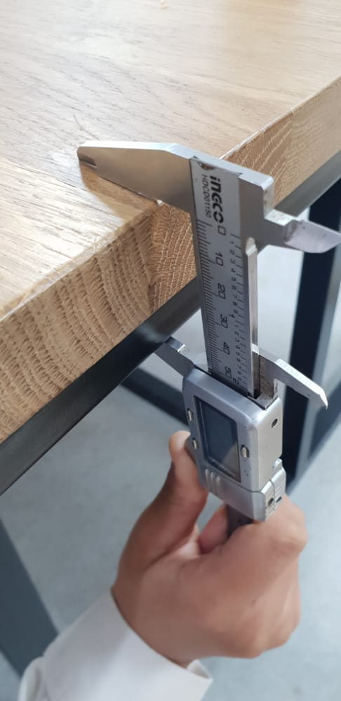
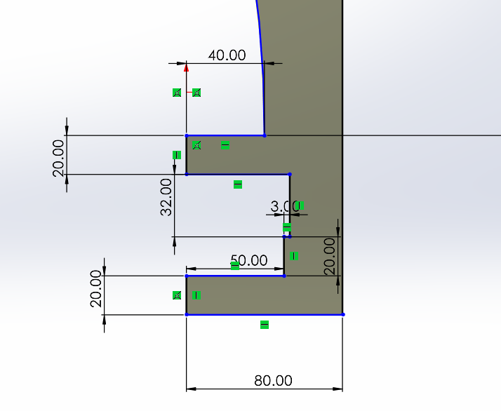
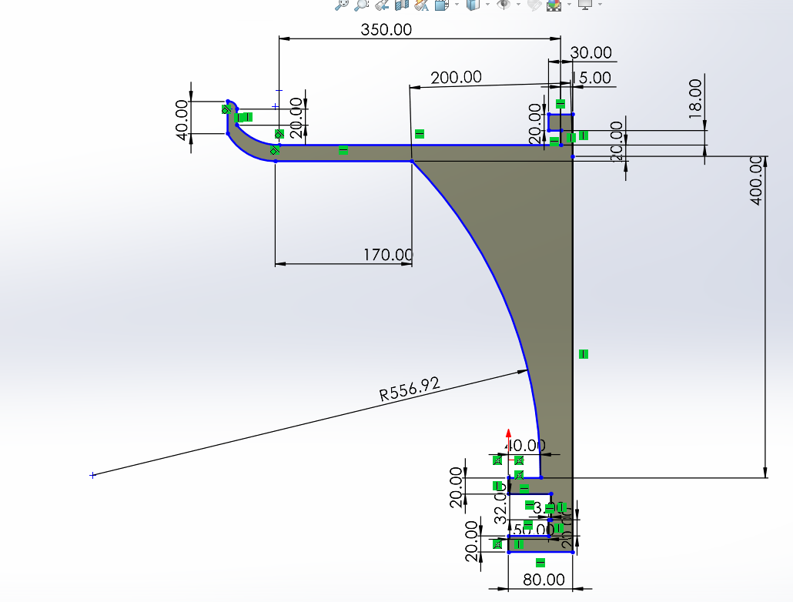
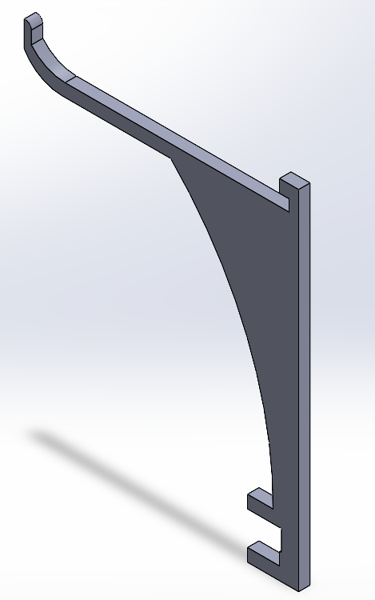
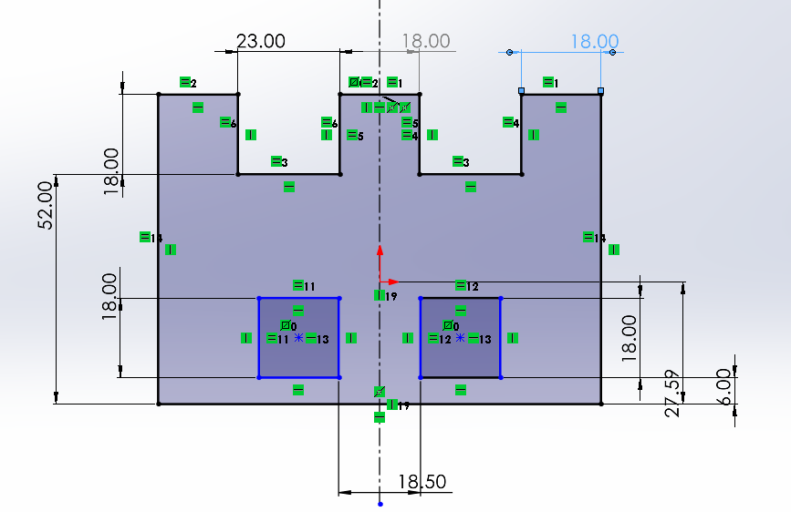
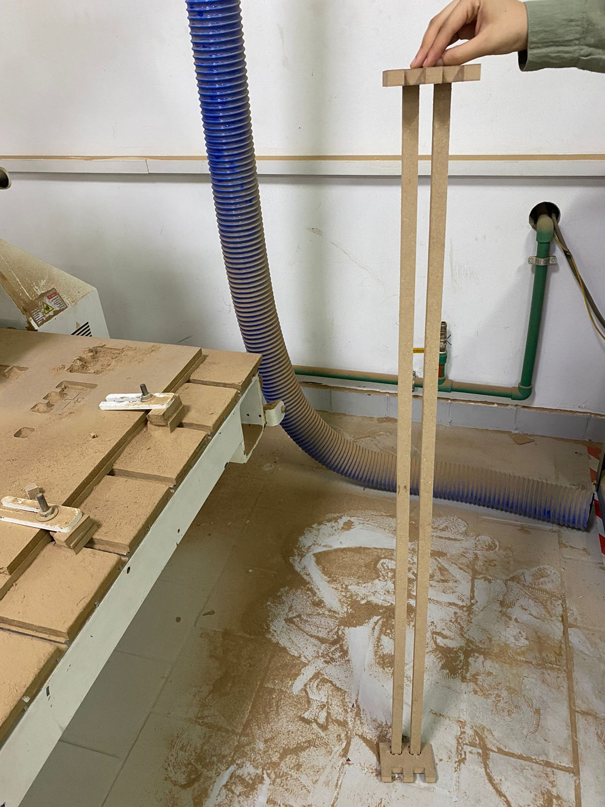

Construction process
Step 1:
Our goal was to manufacture a box to regulate electronic components, so Eng: Ayman made a sketched drawing to a primitive design idea to give us a better perception for the constructed project.
Step 2:
My team selected parts was to construct parts E and F. F is the stand that is going to hold the shelf from falling, so it was crucial for it to be as tough as possible. The main challenge for building the stand is that it must be fixed to the table and the shelf without making any holes or drilling in the shelf and the table carrying the shelf. The following picture shows the shape of the table itself.
Step 3:
After measuring the dimensions of the table we were able to design the stand to a shape equivelant to the table view. The total thickness of the table was 53 mm. The following picture shows the part that will be in touch directly with the table in its detailed dimensions.
Step 4:
The part of the stand that will be in contact with the shelf has different dimentions to coop with the size of it. The shelf is 60cm *120cm so the stand must have the capacity to hold such dimensions. We constructed the stand to be able to recieve the shelf from one direction only "in a horizontal motion", but can't be recieved in the other direction "Vertically".
 Step 5:
The next part to construct was part E which is divided two subparts. The first subpart will be holding the rollers and the second suboart is the path for the first subpart. we constructed the path first.
The path includes to rods and a holder to fis them to the shelf. The rod is 120*1.8*1.8 cm^3 in dimensions. The rod and it's dimensions are declared in the following picture.
Step 6:
we designed the part that will holf the two rods together and fix them to the shelf with the following dimensions. The most interensting dimension is the 18.5 mm as this gap must be suitable for the part carrieng the wollers to rotate freely without resisting this movement. This dimension was constructed using pythagoras theory.
Step 7:
Using a cnc machine we made our path prototype as shown in the following pictures
Step 8:
We tested if the two subparts of the path are connected together correctry or not and we did it !!♥️
Step 9:
It was now the time to design the part responible on carrying the rollers. the T shaped part is designed to enable it to be inseted to the path then to be rorated, this will protect if from falling out the path specified to it. This part also has the ability to move across the whole path from the start to the end of the table to make it more accessible for everyone.
Note that this is the only piece that will be manufactured using 3d printers instead of laser cutters.
And That's it, hope it was helpful for u♥️
Links of these parts are at the following links
https://drive.google.com/file/d/1IR-CK2V5Pt7R6T41xzOD23q0J52p1ewO/view?usp=sharing
https://drive.google.com/file/d/1sOGRiGqBq6MRu4Kk-v21kwix-XEY-LcH/view?usp=sharing
https://drive.google.com/file/d/11l50D1XS8NUNPFDeEVCQTn4MprkdjphP/view?usp=sharing
https://drive.google.com/file/d/1wnUX0DfpLQ__koSO4zhZmL2C9eXl5CIB/view?usp=sharing.
The power and speed ratios for cutting through all using laser cutter is speed =30, power=70.